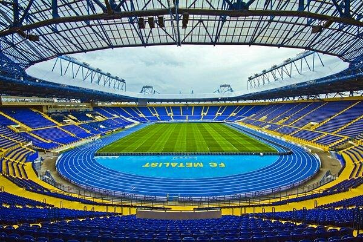

Багатофункціональний обласний спортивний комплекс – ОСК «Металіст» – розташований у Харкові на вулиці Плеханівській. Відстань від стадіону до аеропорту складає 7,5 км, до залізничного вокзалу «Харків-Пасажирський» – 5, а до автовокзалу – 1,2. Далі на kharkov-future.com.ua. Сьогодні «Металіст» є центральним стадіоном міста, який використовується, в основному, для проведення футбольних матчів різного рівня. Вболівальники з інших міст можуть зупинитися в готелі «Металіст» або «Глорія», що знаходяться на тій самій, що і стадіон, вулиці Плеханівській. Місткість «Металіста» – 40 003 глядача. У кроковій доступності від стадіону – станції метро «Спортивна» (чотири виходи) та «Метробудівників» (три виходи). Дістатися ОСК «Металіст» з інших частин Харкова можна також трамваєм або автобусом.
